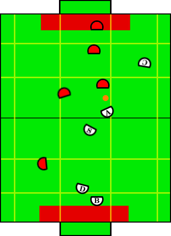

Play: Upfield Defense
Description:
Upfield defense is similar to loose defense, but the special op plays
upfield. The basic idea is that when on offense upfield it is easy to
lose possession of the ball. We don't want the special op to be running
back and forward from back field to upfield, and we would rather have him
play behind the aggressor and block the ball from getting knocked back
toward our goal.
Illustration:

Positions Present:
- Blocker
- Defender
- Aggressor
- Special Op Aggressor
- Creator
Position Strategies:
Blocker + Defender
These positions act the same was as in loose defense.
Blocker: TandemBlockerSkill
Defender: TandemDefenderSkill
|
Special Op
Aggressor:
Plays slightly offset towards the middle of the field behind the aggressor. Offset should be great enough that knocking
the ball past the aggressor AND the special op should be difficult. If an opponent is threatening from behind, but is not too close and not
too far away, BehindScreenOffenseSkill will screen this robot.
Special Op Aggressor: BehindScreenOffenseSkill
|
Aggressor:
- Ball Free->approach ball
- Opponent has ball -> strip ball to outer side (closest
sideline)
- Once we have the ball play will transfer to single assist
offense.
Aggressor: AcquirePosessionSkill
|
Creator:
Get open for a forward pass.
Creator: CreatorLookForwardPassSkill
|
Transitions:
|
We have possession of the ball. |
|
Ball is behind the half line. |
Position Switching:
- Aggressor, Creator, SpecialOpAggressor
|
- If special op farther upfield than creator, switch
- If creator or special op closer to ball than aggressor, switch with aggressor.
|
|